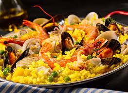

Go back
Paella

Preparado sobre la base de aceite vegetal, cebollas, pimientos, arverjas, comino, orégano, ají panca, azafrán,
vino blanco y sazón.
Descongelar, calentar, mezclar con mariscos y servir.
Ingredientes
- Aceite vegetal
- Cebollas
- Ajíes
- Pimientos
- Arverjas
- Comino
- Orégano
- Ají panca
- Vino blanco
- Sazón
Preparación
- Descongelar el cubo de AYUDA en la COCINA.
- Calentar en una sartén honda a fuego medio, moviendo constantemente.
- En la misma sartén honda, con el cubito de AYUDA descongelado, mezclar con 100g de mariscos
cocidos (30s en agua hirviendo) y 150g de arroz blanco cocido. Mezclar hasta que obtener un color uniforme.
- Mantener la mezcla a fuego lento por un minuto y servir. Decorar con perejil picado y queso
parmesano.
- Servir para una persona.